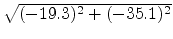
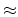
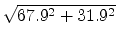

| Interpreting Old Maps |
Before the invention of instruments for determining latitude and longitude, maps could only be crude representations of the regions of the earth surface. Ancient maps, in fact, only indicated approximate locations for cities or natural spots. The relative positions of the main spots would be approximately correct, but the relative positions of neighboring cities were often completely wrong. Despite the technological limitations, and the ``creativity'' that was used to decide about what could not be known, some ancient maps already provided estimates for latitude and longitude.
It has been observed that road information was a source of information for determining the relative positions of cities and, in particular, the geographical coordinates. In fact, it turns out that the relative positions of some of the cities are completely consistent with road information known through other historical sources.
Since the old maps have a large number of cities and respective coordinates, it is very hard to find out which cities were placed in the map using road information known to us through other sources. A computer program to automate that task is definitely needed.
Example
The figure provides an example. There is a road with cities
A, B, C and D. There are two variants
for the distance between A and B. On the map, cities
B and D were placed with reference to A while
city C was placed with reference to B. From the two
possible distances between A and B, 11 and 40, the
second was used. Note that
  40. City D was placed at a distance of
 75. which can be explained as the
sum 11+30+34.
The idea is to focus on a single road. The main input for the program consists of the list of cities, identified by their coordinates in the map, and the road distances between them. There is the problem that historical documents don't agree in all distances, so all variants must be taken into account. The following format is used:
N
X1 Y1
M1 D1, a D1, b...
X2 Y2
...
MN-1 DN-1, a DN-1, b...
XN YN
Where: N is the number of cities in the road,
(X1, Y1),
(X2, Y2), ...,
(XN, YN) are the coordinates of the
cities in the order in which they appear in the road, Mi is
the number of alternative (variant) distances between cities i
and i + 1, and Di,* are the variant distances themselves.
The result is a list of the pairs of cities, i and j, with i < j, for which the relative positions in the map are consistent with road distances (or one of them, when there are variants). For each pair of cities in these conditions, a line with the following format should be printed:
i j Di, j, 1 Di, j, 2
Where Di, j,* are the intervening road distances, which must
sum up to a value that is equal to the straight line distance
between those cities in the input map. The listing is sorted by
i and then by j. Between each value in the same
line, there is a blank space.
Note: None of the test cases contains a pair of
cities for which multiple solutions can be found. In other words,
there is a single list of distances Di, j,* suming up to a
value that is equal to the straight line distance between cities
i and j.
4 0 0 2 11 40 -19.3 -35.1 1 30 -8.2 -62.9 2 42 34 67.9 31.9
1 2 40 1 4 11 30 34 2 3 30